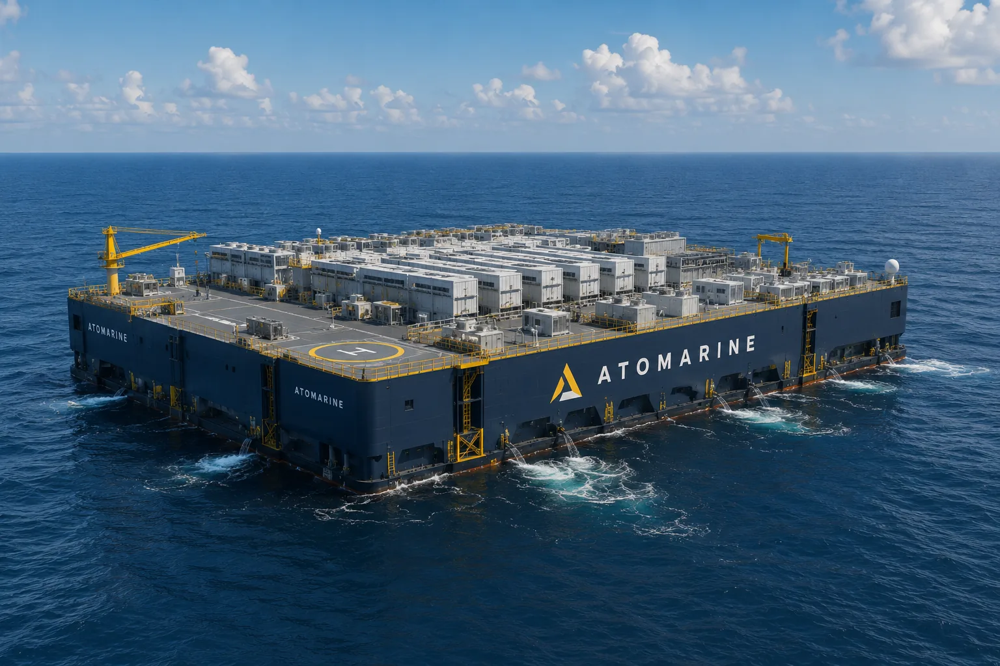
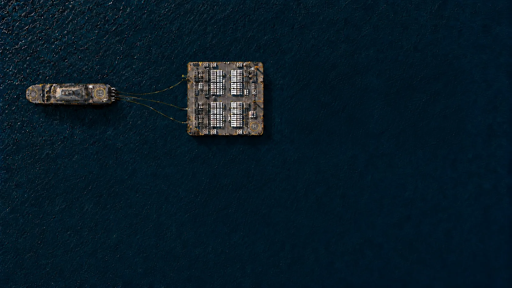
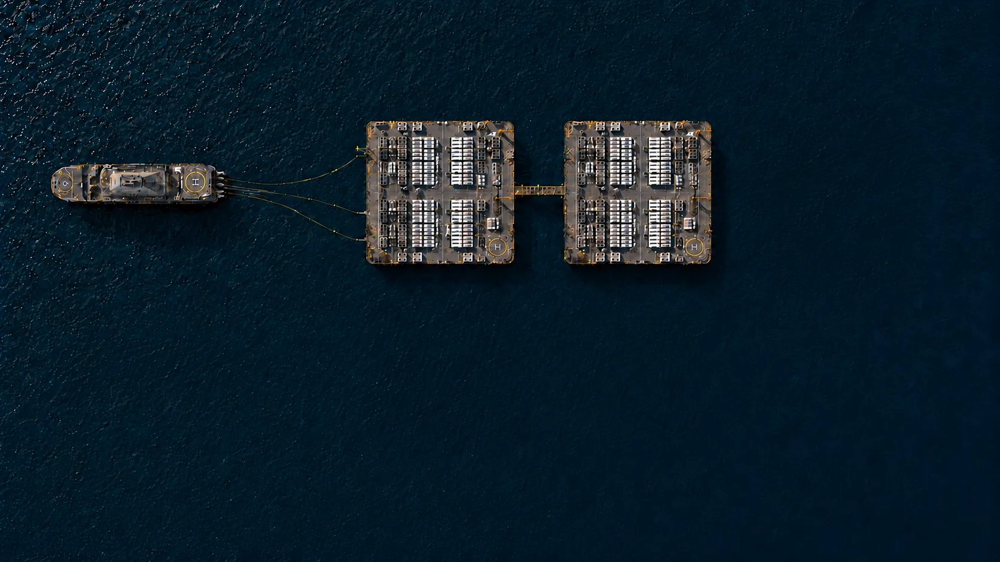
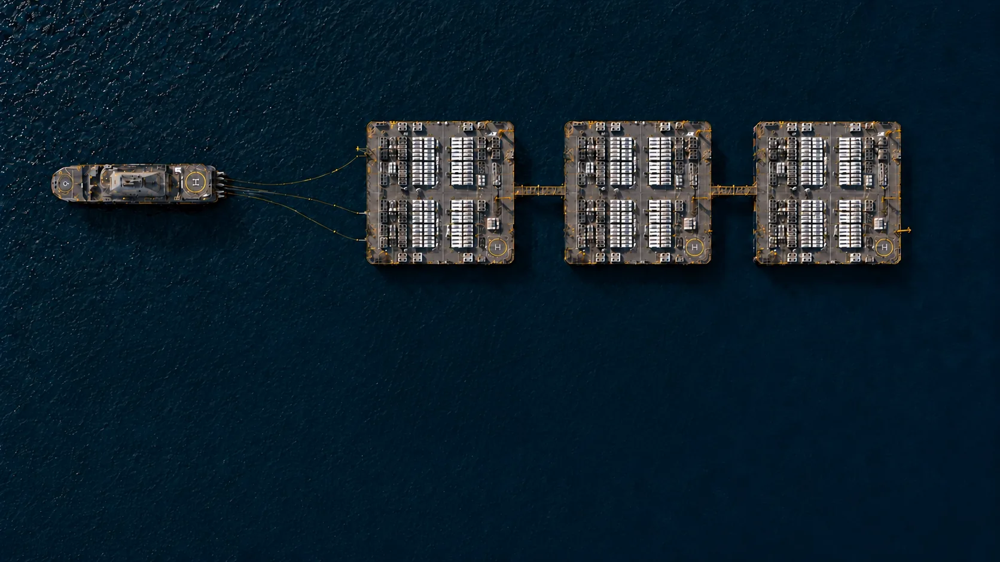
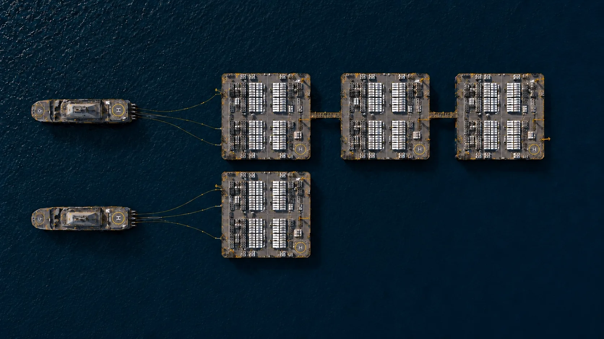
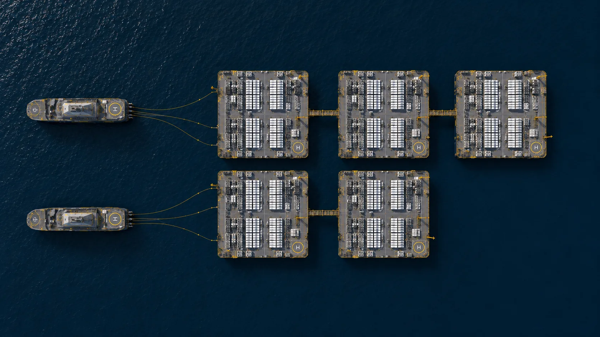
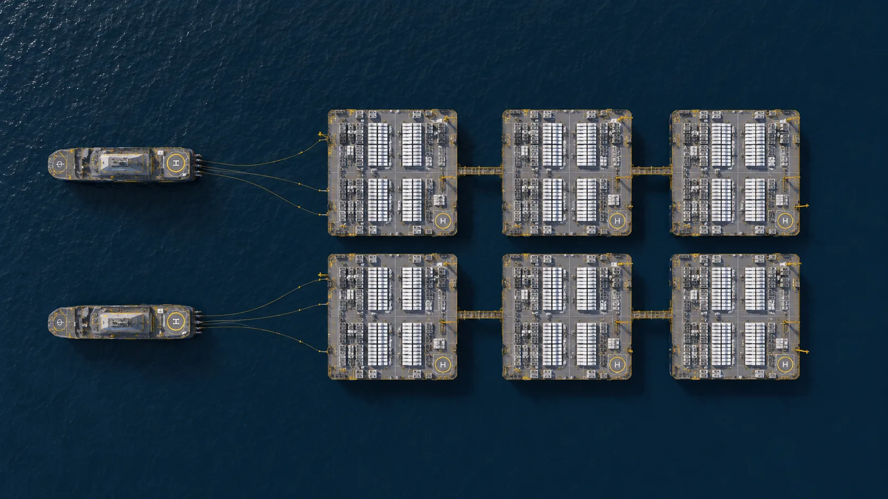
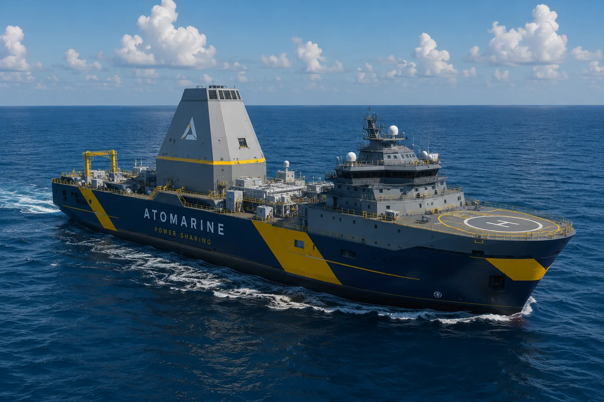

Offshore power & compute infrastructure
Floating platforms for high-performance computing.
Standalone power, seawater cooling, location-agnostic deployment.
01The constraint
A grid connection takes four to seven years, while new chips install in months.
Firm power is projected to fall 35 to 49 gigawatts short by 2030.
On land, cooling and water are among a site's largest costs.
A land campus locks billions into one site, chosen for queues and zoning rather than demand.
02The platform
70% of the world is water. Humanity can already start taking advantage of it.

Generation is built into the campus. No interconnection queue.
Standalone systems can deploy anywhere on Earth.
Standardized units, produced in shipyards with tight deliverability.
A closed seawater loop, no cooling towers, modeled PUE around 1.1.
03Scale
Each platform is built in a shipyard, towed to site, and moored beside the last. From first barge to 450 megawatts, without breaking ground.






Platforms 01 / 06 · 75 MW
04Power

The first platforms run on gas turbines, available on ships already.
As compact marine reactors are built, the same platforms switch to steady, carbon-free nuclear power.
05Contact
We work with AI operators, developers, shipbuilders, energy partners, and investors.
info@atomarine.co